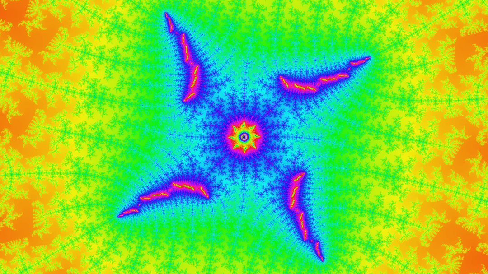
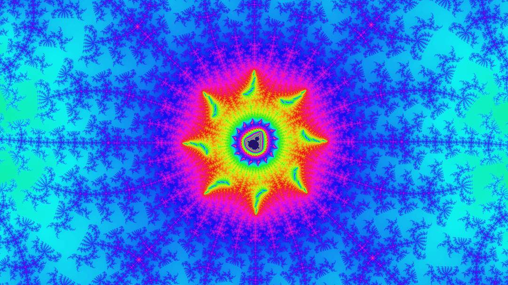
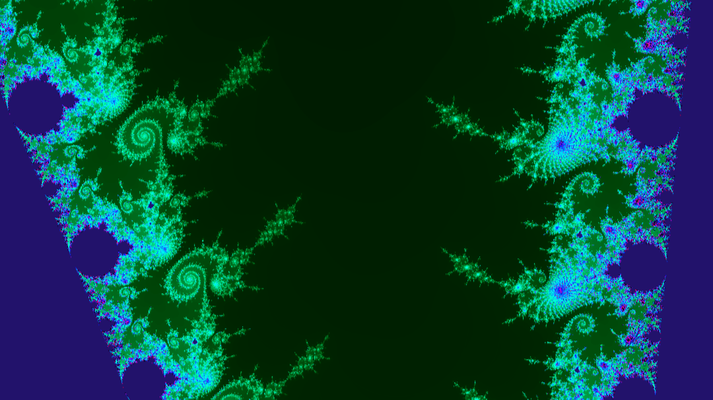
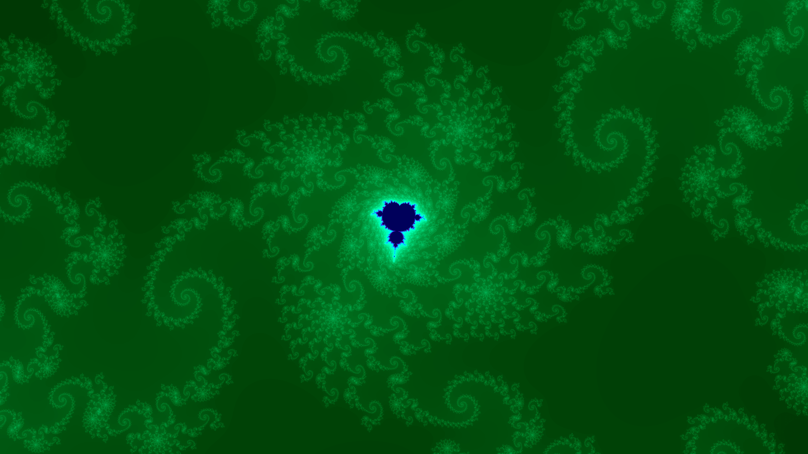
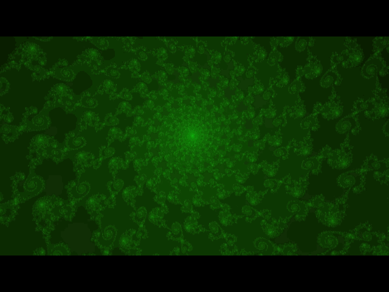
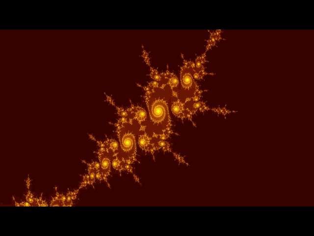
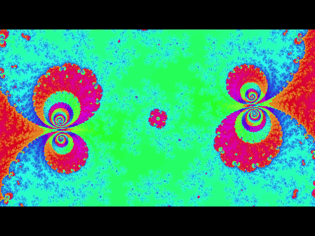

Mandelbrowser Set
A Mandelbrot Set Software by Jorge Baes
Mandelbrowser Set is a JS Mandelbrot set software
in which you can explore the fractal and make some great images.
It is also possible to put all the images together
to make a fractal zoom video. This software gives you a range
of configurations to make the images your way.
The first thing to do is search for beautiful and interesting
views inside the Mandelbrot set. To do that task the Mandelbrot Search
tab ofers an interative fractal explorer. By clicking at the fractal it will
be zoomed in and you will see how fascinating is the Mandelbrot Set.
You can also add the views you like to a point list and save it to future
usage.
After you get the point list you can then
go to the Settings tab. There you will configure the images name, quality,
decorations and other things. When everything is finally set, you can
see a preview of the zoom or the image that will be generated. When you feel the image generating process
is ready to go, you can finally click on GENERATE MANDELBROT and 'voila' you will be
taken to a new tab where the images will be generated!
Here are some images examples generated with this software:







By zooming in the fractal and combining images you can get a zoom video.
This following video is an example made with this software:
How to use the Mandelbrowser Set
Exploring the Mandelbrot Set
How it was told previously this software has three tools that works together: Searcher, Settings and Generator.
The first one to use is the Mandelbrowser Search in which you can navigate and save the points.
When you have the point list, you may go to the Settings tab and finally to the Generator tab.
To access those three tools you can click on them down below. If it is your first try, select the Search tool first and follow the tutorial there. The Search and Settings have tutorials that are located on the top left corner.